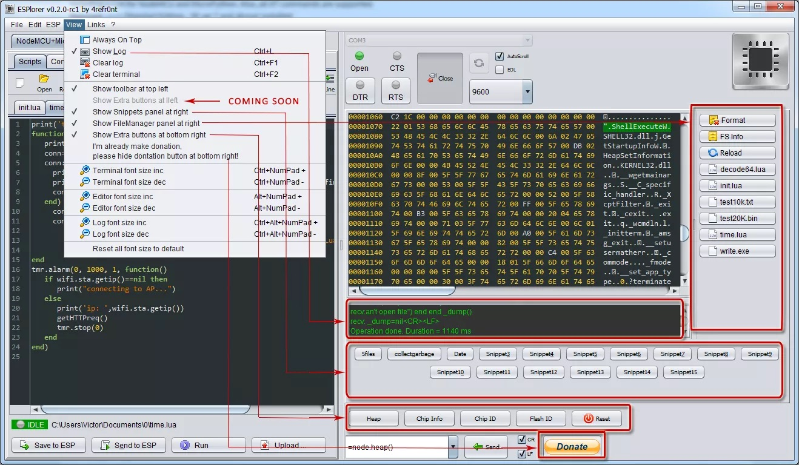

As with flashing there are several ways to upload code from your computer to the device.
Note
The NodeMCU serial interface uses 115'200bps at boot time. To change the speed after booting, issue uart.setup(0,9600,8,0,1,1). If the device panics and resets at any time, errors will be written to the serial interface at 115'200 bps.
Tools¶
Transferring application code to ESP8266/8285 is an essential task, one that you'll perform quite frequently. Hence, it does make sense to try a few different uploading tools until you find one you feel comfortable with. https://frightanic.com/iot/tools-ides-nodemcu/ lists almost a dozen classical uploaders - in addition to IDEs or IDE-like applications which of course transfer code as well.
The NodeMCU firmware team does not give any recommendations as for which uploader to use nor are there any "NodeMCU approved" tools. The below listed tools are just three, in no particular order, which seem popular and/or reasonably well maintained.
ESPlorer¶
The essential multiplatforms tools for any ESP8266 developer from luatool author’s, including Lua for NodeMCU and MicroPython. Also, all AT commands are supported. Requires Java (Standard Edition - SE ver 7 and above) installed.

Source: https://github.com/4refr0nt/ESPlorer
Supported platforms: macOS, Linux, Windows, anything that runs Java
nodemcu-uploader.py¶
A simple tool for uploading files to the filesystem of an ESP8266 running NodeMCU as well as some other useful commands.
Source: https://github.com/kmpm/nodemcu-uploader
Supported platforms: macOS, Linux, Windows, anything that runs Python
NodeMCU-Tool¶
Upload/Download Lua files to your ESP8266 module with NodeMCU firmware. Simple. Command Line. Cross-Platform. File Management. NodeMCU.
Source: https://github.com/andidittrich/NodeMCU-Tool
Supported platforms: macOS, Linux Windows, anything that runs Node.js
init.lua¶
You will see "lua: cannot open init.lua" printed to the serial console when the device boots after it's been freshly flashed. If NodeMCU finds a init.lua in the root of the file system it will execute it as part of the boot sequence (standard Lua feature). Hence, your application is initialized and triggered from init.lua. Usually you first set up the WiFi connection and only continue once that has been successful.
Be very careful not to lock yourself out! If there's a bug in your init.lua you may be stuck in an infinite reboot loop. It is, therefore, advisable to build a small delay into your startup sequence that would allow you to interrupt the sequence by e.g. deleting or renaming init.lua (see also FAQ). Your init.lua is most likely going to be different than the one below but it's a good starting point for customizations:
-- load credentials, 'SSID' and 'PASSWORD' declared and initialize in there
dofile("credentials.lua")
function startup()
if file.open("init.lua") == nil then
print("init.lua deleted or renamed")
else
print("Running")
file.close("init.lua")
-- the actual application is stored in 'application.lua'
-- dofile("application.lua")
end
end
-- Define WiFi station event callbacks
wifi_connect_event = function(T)
print("Connection to AP("..T.SSID..") established!")
print("Waiting for IP address...")
if disconnect_ct ~= nil then disconnect_ct = nil end
end
wifi_got_ip_event = function(T)
-- Note: Having an IP address does not mean there is internet access!
-- Internet connectivity can be determined with net.dns.resolve().
print("Wifi connection is ready! IP address is: "..T.IP)
print("Startup will resume momentarily, you have 3 seconds to abort.")
print("Waiting...")
tmr.create():alarm(3000, tmr.ALARM_SINGLE, startup)
end
wifi_disconnect_event = function(T)
if T.reason == wifi.eventmon.reason.ASSOC_LEAVE then
--the station has disassociated from a previously connected AP
return
end
-- total_tries: how many times the station will attempt to connect to the AP. Should consider AP reboot duration.
local total_tries = 75
print("\nWiFi connection to AP("..T.SSID..") has failed!")
--There are many possible disconnect reasons, the following iterates through
--the list and returns the string corresponding to the disconnect reason.
for key,val in pairs(wifi.eventmon.reason) do
if val == T.reason then
print("Disconnect reason: "..val.."("..key..")")
break
end
end
if disconnect_ct == nil then
disconnect_ct = 1
else
disconnect_ct = disconnect_ct + 1
end
if disconnect_ct < total_tries then
print("Retrying connection...(attempt "..(disconnect_ct+1).." of "..total_tries..")")
else
wifi.sta.disconnect()
print("Aborting connection to AP!")
disconnect_ct = nil
end
end
-- Register WiFi Station event callbacks
wifi.eventmon.register(wifi.eventmon.STA_CONNECTED, wifi_connect_event)
wifi.eventmon.register(wifi.eventmon.STA_GOT_IP, wifi_got_ip_event)
wifi.eventmon.register(wifi.eventmon.STA_DISCONNECTED, wifi_disconnect_event)
print("Connecting to WiFi access point...")
wifi.setmode(wifi.STATION)
wifi.sta.config({ssid=SSID, pwd=PASSWORD})
-- wifi.sta.connect() not necessary because config() uses auto-connect=true by default
Compiling Lua on your PC for Uploading¶
If you install lua on your development PC or Laptop then you can use the standard Lua
compiler to syntax check any Lua source before downloading it to the ESP8266 module. However,
the NodeMCU compiler output uses different data types (e.g. it supports ROMtables) so the
compiled output cannot run on the ESP8266.
Compiling source on one platform for use on another (e.g. Intel x38 Window to ESP8266) is
known as cross-compilation and the NodeMCU firmware supports the compilation of luac.cross
on *nix patforms which have Lua 5.1, the Lua filesystem module (lfs), and the essential
GCC tools. Simply change directory to the firmware root directoy and run the command:
lua tools/cross-lua.lua
This will generate a luac.cross executable in your root directory which can be used to
compile and to syntax-check Lua source on the Development machine for execution under
NodeMCU Lua on the ESP8266.